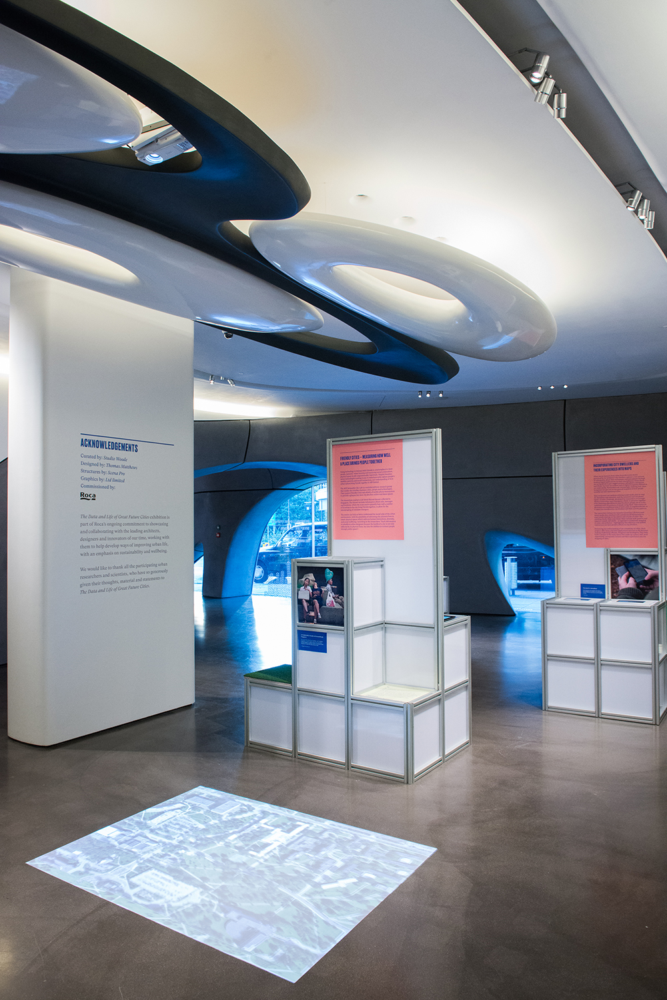
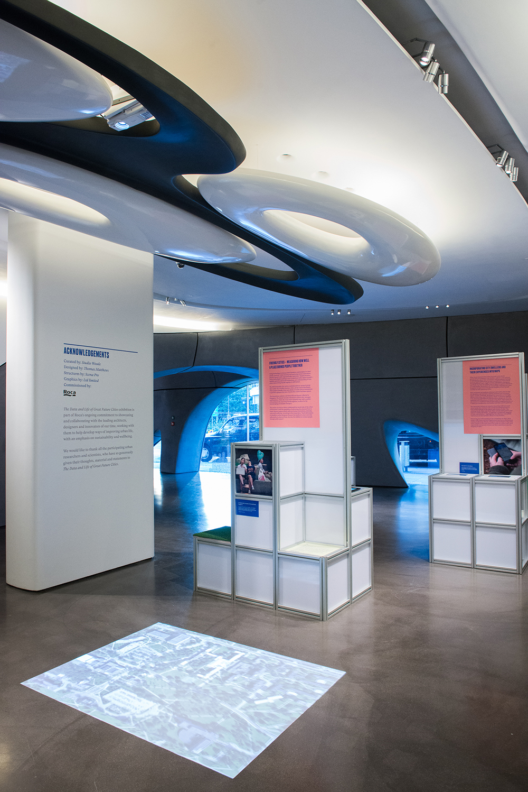

Minus One -1
I was invited by the Nieuwe Instituut to transform the basement and former storage area into a new lab for digital culture to be led by Ramon Amaro and co-curated with Benjamin Earl. Tucked away beneath Gallery 0, this previously dark and disorienting space—with its black walls, mirrored surfaces, and central glass cylinder—has been re-envisioned as a flexible, multi-functional environment for workshops, presentations, exhibitions and events around digital culture. The design aims to avoid the usual aesthetics of tech or a gallery space, instead amplifying the subversive atmosphere of the basement imagining it as a threshold to another realm of possibility: “In the belly of Nieuwe Instituut past the concrete walls and down the industrial metal stairs between the humming servers, and the shiny exhibitions above, there will be a new hub of activity; its continuing mission, to explore strange new digital worlds.” A striking blue threshold now marks the entrance, with illuminated signage visible from the ground floor. This became the starting point for the graphic identity by Niels Schrader. Inside, the existing mirrored wall has been partially masked to reduce disorientation, while the central glass cylinder is lined with metallic acoustic drapes. This central feature now serves as a flexible focal point, hosting meetings, performances, and radio shows. Bespoke modular furniture, including tables and mobile pedestals, allows for reconfiguration of the surrounding space; functioning as an exhibition area, reading room, or collaborative workspace.
Spatial Design, Lead Designer
built by Bouwko


 
